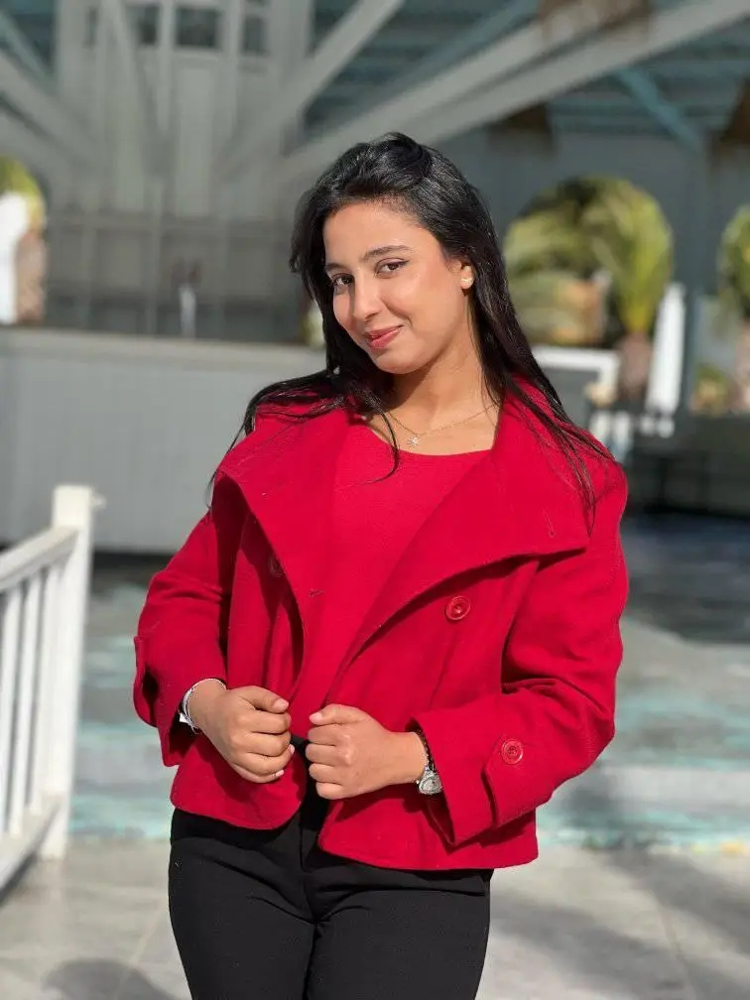

A
arij.abdaoui
🌙
EN
Arij Abdaoui
WireGuard
Keycloak
Traefik
Wazuh
Docker
assets/profile.jpg

M2
5+
✦
M2
10+
5+
🌐
↗
🛡️
↗
🐳
↗
🧠
↗
01
2021
Lycée Cité El-Hadika
02
2021 — 2024
03
2025 — 2027
Contact
✉
arij.abdaoui@etudiant-fst.utm.tn
☎
+216 52 636 675
⌖
Tunis, Tunisie
Message
×
‹
›
Technologies
GitHub ↗